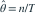
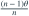
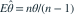

，
， 。令
。令  ，样本量
，样本量  ，最大似然估计为
，最大似然估计为 
。其期望为？- A

- B

- C
- D

我已思考，展开答案与解析
正确答案：C
- ，因此
 为形状
为形状  、速率 的 Gamma 变量。
、速率 的 Gamma 变量。 - 其负一阶矩为 ，所以

。
易错提醒MLE 不自动具有无偏性；先识别变换后的 Gamma 分布。
JYSG · 432精选 · 册内复旦大学432·2020年·六(1)；PDF第36页（印刷页34）
原大题拆解
，。令 ，样本量 ，最大似然估计为 
。其期望为？
为形状 、速率 的 Gamma 变量。
。JYSG · 432精选 · 册内复旦大学432·2020年·六(1)；PDF第36页（印刷页34）
原大题拆解